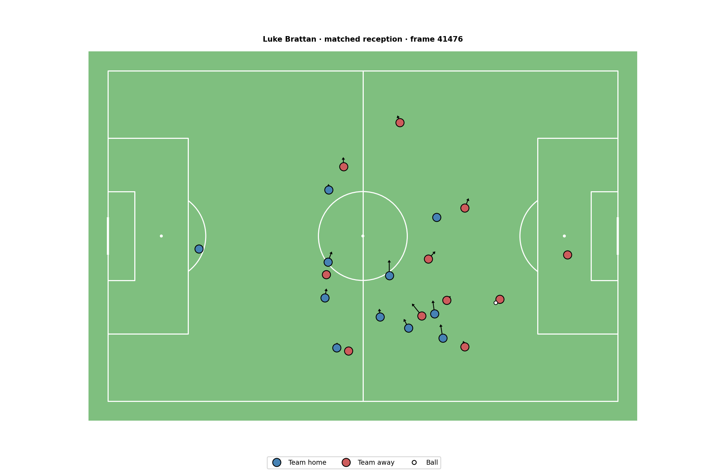

This is the third part of the User guide. Part 1 describes the source data and one-match preprocessing; part 2 defines the segmentation and context labels.
The complete example follows Ivan Vujica’s possession 8_774 in Melbourne City FC–Macarthur FC, 7 March 2025. Vujica receives in his own third, carries and completes a pass to Luke Brattan. It is the first case in the case studies.
Here the models distributed with PRESS evaluate the observed frames. The case studies use held-out predictions, so their numbers can differ from this deployment example.
1. Original match inputs
The loader expects the original match JSON, tracking JSONL and dynamic-event CSV in the match directory. It prepares velocities, possessions, context and actions in memory. A single call replaces a separate preprocessing command and precomputed Parquet files.
2. Select the match directory
The following cell selects the original public match and the individual possession illustrated in the report.
import osfrom pathlib import Pathimport matplotlib.pyplot as pltimport numpy as npimport pandas as pdfrom PRESS import PRESSfrom PRESS.visualization import plot_frame, plot_riskopendata = Path(os.environ["SKILLCORNER_OPENDATA"])output_dir = Path(os.environ.get("PRESS_EXAMPLE_OUTPUT", "outputs/user_guide"))output_dir.mkdir(parents=True, exist_ok=True)figure_dir = Path("figures")figure_dir.mkdir(exist_ok=True)match_id ="2006229"individual_id ="8_774"match_dir = opendata /"data/matches"/ match_idprint("Original SkillCorner match:", match_id)print("Required files: match JSON, tracking JSONL and dynamic-event CSV")
Original SkillCorner match: 2006229
Required files: match JSON, tracking JSONL and dynamic-event CSV
print("Selected match:", match_id)
Selected match: 2006229
3. Initialize the object
One PRESS object holds one match. It validates and copies these inputs, links team possessions from verified individual intervals, and creates empty result dictionaries. Model predictions are calculated only when requested.
press = PRESS.from_skillcorner(match_dir)individuals = press.get_player_possessions()actions = press.get_actions()print("Match metadata:", press.get_match_info())print("Preparation:", press.get_preparation_report())print("Stored predictions after initialization:")print({component: len(frames) for component, frames in press.results.items()})
The loader reads the original SkillCorner files and prepares velocities, possessions, action checkpoints and match context in memory. It works directly on the original files. For data already prepared by the caller, initialize PRESS(tracking_data, ...) directly; see the initialization reference.
4. Select a possession and recover its checkpoints
Select the individual possession by its ID and retrieve the linked team interval. get_player_frames selects the individual’s observed frames. get_actions(possession_id=individual_id) selects the individual’s canonical actions. Their frame_start values are the checkpoints; valid_only=True retains usable start states.
The three canonical checkpoints are the carry starts at 0 and 1 s and the pass release at 2.9 s. The short-tail start at 2 s is available only when requesting additional snapshots. Its definition, together with previous_action, is given in part 2.
Use get_player_possessions() for all individual possessions, or filter directly with team_id="home" or player_id="home_1" (using an alias present in your match). get_team_possessions(team_id="home") returns team-possession intervals. The same team/player filters are available in get_actions and replace DataFrame slicing.
5. Plot any usable frame
Frame 41439 is 0.5 s after reception, inside the first carry. It is an additional snapshot. The getter returns the observed tracking row; get_state extracts the numerical player/ball state and get_frame_context resolves the current event context.
A generic observed frame inside Vujica’s first carry, drawn by the package plot function.
6. Inspect the canonical checkpoints
Plot the same observed pitch at the three action starts. At this stage no predictions have been calculated. The last panel shows the pass-release state; the ball’s subsequent flight belongs to the execution of that pass.
Observed states at the two canonical carry starts and the terminal pass release.
7. Calculate h and xLoss at the generic frame
compute_risk_frame(..., include_residual=True) runs all five fitted components: pass execution, carry execution, pass destination, pass–carry choice and conditional residual risk. It calculates only the preliminary effective-hazard BCOS required as a feature by those fitted models. The final transport descriptor is available separately through compute_bcos() and is evaluated only when requested. The fitted xT surfaces and physical parameters are loaded from the model artifacts distributed with PRESS.
The current score is read from the prepared tracking context and is relative to Vujica’s team. Elapsed time is recovered from the observed individual interval. h describes loss on the current action; xLoss adds continuation risk to predict the terminal individual-possession outcome.
Frame 41439: h=34.47%, xLoss=54.97%, band=High
Elapsed time used: 0.5
h and xLoss from the distributed models, evaluated at the generic frame.
8. See where the object stores results
Results are indexed by component, then frame ID. Complete risk calculations retain compact outputs by default: destination-weighted pass success/failure, carry risk, action choice, BCOS area, h with its band, residual risk and xLoss. Each frame refers to shared settings through configuration_id. Physical/numerical settings and xT inputs are stored in press.result_configurations; fitted coefficients, spline bases and tree models remain in press.result_models.
Use get_result_configuration(frame_id) and get_result_model(component, frame_id) to inspect the settings and fitted model actually used, including custom parameters. To retain spatial fields, defender contributions and feature records for inspection or plotting, use keep_details=True in the complete risk call. Separately called component methods retain their detailed outputs.
For many possessions, keep the default keep_details=False. Compact results support risk annotations; spatial maps require detailed results. Tree feature names, order and categories belong to the fitted model; their values belong to the frame calculation. The same storage convention applies to standalone components.
Level
Ball-drive example
BCOS example
Model
Estimated lambda_0, s, linear/spline coefficients, knots and basis transformations.
Uses the ball-drive model’s default dispersion.
Configuration
Defender maximum speed, accelerations, integration step and forecast horizon.
Separate carrier/defender maximum speeds, dispersion input, accelerations, spatial radius, grid and numerical orders.
Result
Loss probability for this frame; optional defender contributions and survival curve.
Accessible area for this frame; optional accessibility surface and interception diagnostics.
For example, a ball-drive physics_kwargs={"v_max": 6.5} changes defender motion and keeps the estimated coefficients and spline bases. A model={"s": 0.35} changes the model parameter while retaining omitted coefficients and bases. Both produce a new result for the selected frame. Pitch control uses its own motion settings; BCOS distinguishes carrier v_bc_max from defender v_def_max. Per-call overrides apply to the named component only. Model, configuration and result: full contract and defaults.
print("Computed frames per component:")print({component: sorted(frames) for component, frames in press.results.items()})print("Stored h record:", press.results["HAZARD"][frame_id])print("Stored xLoss record:", press.results["XLOSS"][frame_id])# Getters recover copies of the existing calculations.h_record = press.get_hazard_result(frame_id)xloss_record = press.get_xloss_result(frame_id)pass_field = press.get_ppcf_result(frame_id)drive = press.get_ball_drive_risk_result(frame_id)print("Expected pass success:", pass_field["Expected pass success"])print("Spatial details retained:", pass_field["details_available"])print("Physical settings:", press.get_result_configuration(frame_id)["BALL_DRIVE_RISK"])print("Fitted drive parameters:", press.get_result_model("BALL_DRIVE_RISK", frame_id).parameters)print("Stored carry-loss probability:", drive["Ball drive risk"])
The getters return the stored results. get_results() retrieves a copy of the full result cache; use component-specific getters when only one output is needed. Getter reference.
9. Calculate the complete canonical profile
Evaluate the same models at all three checkpoints. include_snapshots=False explicitly selects the canonical sequence. The score remains unchanged over this 2.9 s possession; match-clock minutes are read separately from each tracking frame.
frame_id elapsed_seconds action p_pass Hazard xLoss band
41434 0.0000 ball_drive 0.4541 0.2911 0.4349 Medium
41444 1.0000 ball_drive 0.3358 0.3385 0.5392 High
41463 2.9000 pass 0.8182 0.0937 0.1275 Low
Scores assigned to the checkpoints
The table reports P(pass), h, xLoss and the h band at each action start. The figure below annotates those calculated scores on the observed pitch. These are state-level probabilities; the case studies report the player score E−O.
Calculated h, xLoss and h bands at the canonical checkpoints.

The matched reception by Luke Brattan confirms that Vujica completed the final pass. This outcome frame follows Vujica’s possession and adds no checkpoint to it.
The generic-frame prediction at 0.5 s is stored too, as an additional snapshot. Canonical h profiles and their retrospective interpretation are described in h and bands. An xLoss prediction remains a terminal individual-outcome probability at each state.
10. Save and reload the results
Save a compact checkpoint table and the complete calculated arrays. save_results writes metadata.json and arrays.npz; the files contain the calculated results. This tutorial explicitly replaces its own previous result export when rerun.
profile.to_csv(output_dir /"checkpoint_scores.csv", index=False)export_dir = press.save_results(output_dir /"match_results", overwrite=True)print("Saved files:", sorted(path.name for path in export_dir.iterdir()))restored = PRESS.from_skillcorner(match_dir)restored.load_results(export_dir)restored_profile = pd.DataFrame([ {"frame_id": int(frame),"h": restored.get_hazard_result(int(frame))["Hazard"],"xLoss": restored.get_xloss_result(int(frame))["xLoss"], }for frame in profile.frame_id])print(restored_profile.to_string(index=False))np.testing.assert_allclose(restored_profile.h, profile.Hazard, rtol=0, atol=0)np.testing.assert_allclose(restored_profile.xLoss, profile.xLoss, rtol=0, atol=0)print("Reloaded scores agree exactly with the calculated checkpoint scores.")
Saved files: ['arrays.npz', 'metadata.json']
frame_id h xLoss
41434 0.291117 0.434926
41444 0.338482 0.539166
41463 0.093706 0.127518
Reloaded scores agree exactly with the calculated checkpoint scores.
Loading validates the input and model fingerprints before restoring the cached calculations. The restored object uses the same match tables, context columns and model settings. Persistence reference.